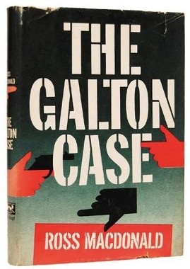
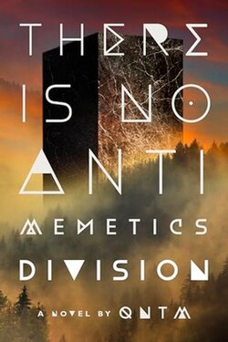
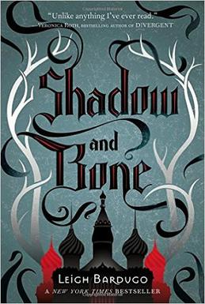
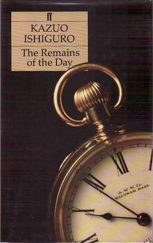

I paid $5 for this book at a thrift store knowing nothing about it. (Except someone recommended me the author a while ago) This is a noir detective book from the 50s originally published as a cheap paperback. These things are meant to be read by men on the bus on the way to work. We got women in tight shirts, gangsters, rich families, a couple action scenes. Your grandparents would've loved this book. Due to this purpose, the book has a kinda odd structure. Each chapter is like 4 pages long and they are all the same. The detective shows up somewhere, talks to a tropey character, and gets information to set up the next location with a new tropey character in it for next chapter. The book always felt in motion, but never felt it was going somewhere interesting. By the end I really liked the story, but I wondered what the purpose was in the middle. I think mostly that was the structure just feeling odd to me. Also the protagonist is nothing. He's not a character. I've previously said the key to a mystery is good characters. That's not the case here, so why did I finish it? Because the prose and theme are really good. We are dealing with a family in shambles because of a rebellious son being cast out of the family. And the book explores the wake this event, all the people hurt and all the people trying to take advantage of it. And these sentences really feel so good to read. It's just cover to cover amazing writing. Actually, here's a bit of writing I just found by flipping to a random page.
“Why did you do it?” I said.
“I don’t know. I guess I just got sick of him. Now it’s time for me to take my punishment. I killed, and I deserve to die.”
The tragic words had an unreal quality. She spoke them like a life-size puppet activated by strings and used by a voice that didn’t belong to her. Only her eyes were her own, and they contained a persistent stunned innocence.
There's really no reason to read this unless you really liked that sentence, or you're an 80 year old detective story fan. I enjoyed it, but I don't think I'll read anything else by this author.

This really shows the best parts of SCP. It's so weird and creative. Unlike most horror, this feels like something that could've only been written in the 21st century. It's just so out there.
The book is about "antimemes", SCPs that remove themselves from your memory. Stuff like The Silence in Doctor Who: when you stop looking at them you immediately forget they ever existed. How do you fight something like that? Answer: be really smart.
Like the best sci-fi novels, every chapter in this book gives an idea that could carry an entire series on its own, and then moves on to something even more crazy and out there. I was really surprised how much ideas kept escalating in this book. Ngl all this escalating probably made this thing hype af to read as it was being released on the SCP wiki back in 2015.
And this book is scary. I got really spooked by it. I had such a good time with this book I finished it in two days. The best SCP authors always have the most inventive stories, and it really pisses me off that more of them havn't made the jump into traditional publishing yet, so it's going to be a while before we get another book like this one again.

I didn't finish a single book in February, despite reading more total in February than January. And then I finished this book in 4 days. Whoops. But can you blame me? It's a YA novel with two love interests, in a school, with a rags to riches peasant girl. Be still my beating heart!
I'd already read the authors next series (Six of Crows). The setting and plot of this are only 30% as interesting and everything feels more generic. I can't tell if this is just Bardugo in her unformed larval stage, or whether she used something more tried and true to break into the industry? Could be both. Six of Crows was a rag-tag group of people conning their way across the world to do a heist. This is self insert protagonist being the hero of the prophecy and learning to harness her special powers that no one else has. But I still had a great time reading it. If we judge books by whether I finish them Bardugo is a greater writer than Borges, Flannery O'Connor, and C.S. Lewis.
In terms of pure enjoyment, I had a better time reading all four books I started in February vs this one. This one was very easy to read, but it's all in one ear out the other. This book was like popcorn. Maybe the book equivalent is YouTube vs movies. One is just easier to consume for long periods of time.
But lets not forget; this proves you never age out of YA. Hot boys are forever. (And the boys are really hot)
(And for the record, the twist in the 3rd act got me. I predicted it wrong)
.jpg)
Im gonna have a hard time watching this movie in a few months because the protagonist in my head looks nothing like Ryan Gosling
This author is just so wholesome. He just loves science in this pure and amateur way. You know he follows NASA on Twitter and loves talking about fun science facts.
The Martian was just a series of "unique science problem" -> "fun science solution" -> problem -> solution etc for the whole thing. That book was great, but this one's plot has a little more sauce. More character and more emotional moments. Nothing crazy, just more to spice things up. Another big difference from The Martian is this book's science is a lot more out there. For me it was always in the realm of possibility, but there might be a few too many crazy ideas for some people. This book is about 1/3 flashback, especially early on. My theory is the movie is only going to have 3 total flashback scenes.
It was a lot easier and breezy than The Remains of the Day. If you want to get back into reading this might be what gets you started. Fun science romp.

This protagonist broke my heart. Stevens is a butler reflecting on his life, and his first person perspective gives the book such an irony. His life is so sad, but he doesn't see it that way. He's actually quite proud of his career, serving the great Lords and Ladies of Britain. But his employers never thank him, and he has paid such a price to do this job well. First off he has no friends. At one point he remarks "a butler is only off-duty when they are alone." And the person he most could've become friends with (Miss Kenton) he frequently hurts in unintentional ways because of his devotion to his job. So many times he leaves her in tears and he is wondering why she is so unprofessional. It hurts so much seeing how much he hurts her and he refuses to see he's even done it. The irony of Stevens's life is most obviously seen when we learn his Lord was a Nazi sympathizer in WWII. Stevens was at least taking consolation in serving a great man, except he wasn't. And he seems to have blocked from his mind him being a bad man.
Every time I picked up this book i'd read a section and think "I have to mention this in the review." The book is so dense with chapters i'll remember the rest of my life.
This book is so sad, but it doesn't get there by killing baby goats or blowing up orphanages. The painful sorrow is from one guy, talking about his sad life, and being proud of it. There's one heartaching moment near the end where it seems for a second Stevens will learn his lesson, but then he doesn't. This book was beautiful. I see why it won a Nobel Prize in literature.